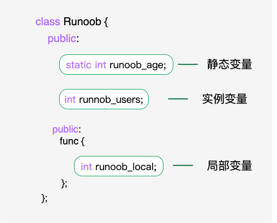

C++ Miembros estáticos de la clase
 Clases y objetos en C++
Clases y objetos en C++Podemos usarstaticla palabra clave para definir miembros de la clase como estáticos. Cuando declaramos un miembro de la clase como estático, esto significa que sin importar cuántos objetos de la clase se creen, el miembro estático tiene una sola copia.

Los miembros estáticos se comparten entre todos los objetos de la clase. Si no hay otras declaraciones de inicialización, cuando se crea el primer objeto, todos los datos estáticos se inicializan a cero. No podemos colocar la inicialización de miembros estáticos dentro de la definición de la clase, pero podemos hacerlo fuera de la clase usando el operador de resolución de ámbito::para redeclarar la variable estática e inicializarla, como se muestra en el siguiente ejemplo.
El siguiente ejemplo ayuda a entender mejor el concepto de datos miembros estáticos:
Ejemplo
Cuando el código anterior se compila y ejecuta, produce el siguiente resultado:
Constructor called. Constructor called. Total objects: 2
Funciones miembro estáticas
Si se declara un miembro de función como estático, se puede independizar la función de cualquier objeto específico de la clase. Las funciones miembro estáticas se pueden invocar incluso cuando no existen objetos de la clase,Las funciones estáticassolo necesitan usar el nombre de la clase y el operador de resolución de ámbito::para poder acceder.
Las funciones miembro estáticas solo pueden acceder a datos miembros estáticos, otras funciones miembro estáticas y otras funciones fuera de la clase.
Las funciones miembro estáticas tienen un ámbito de clase; no pueden acceder al puntero `this` de la clase. Se pueden usar funciones miembro estáticas para determinar si ciertos objetos de la clase han sido creados.
Diferencias entre las funciones miembro estáticas y las funciones miembro normales:
- Las funciones miembro estáticas no tienen puntero `this` y solo pueden acceder a miembros estáticos (incluyendo variables miembro estáticas y funciones miembro estáticas).
- Las funciones miembro normales tienen puntero `this` y pueden acceder a cualquier miembro de la clase; mientras que las funciones miembro estáticas no tienen puntero `this`.
El siguiente ejemplo ayuda a entender mejor el concepto de funciones miembro estáticas:
Ejemplo
Cuando el código anterior se compila y ejecuta, produce el siguiente resultado:
Inital Stage Count: 0 Constructor called. Constructor called. Final Stage Count: 2Otras extensiones
weiyx
550***274@qq.com
Dirección de referencia
Las variables miembro estáticas son solo una declaración en la clase, no una definición, por lo que deben definirse fuera de la clase; en realidad, esto es asignar memoria a la variable miembro estática. Si no se define, se reportará un error. La inicialización consiste en asignar un valor inicial, mientras que la definición consiste en asignar memoria.
#include <iostream> using namespace std; class Box { public: static int objectCount; // 构造函数定义 Box(double l=2.0, double b=2.0, double h=2.0) { cout <<"Constructor called." << endl; length = l; breadth = b; height = h; // 每次创建对象时增加 1 objectCount++; } double Volume() { return length * breadth * height; } private: double length; // 长度 double breadth; // 宽度 double height; // 高度 }; // 初始化类 Box 的静态成员 其实是定义并初始化的过程 int Box::objectCount = 0; //也可这样 定义却不初始化 //int Box::objectCount; int main(void) { Box Box1(3.3, 1.2, 1.5); // 声明 box1 Box Box2(8.5, 6.0, 2.0); // 声明 box2 // 输出对象的总数 cout << "Total objects: " << Box::objectCount << endl; return 0; }Resultado de salida:
weiyx
550***274@qq.com
Dirección de referencia
yuki
yud***124@163.com
Se pueden usar variables miembro estáticas para comprender claramente las llamadas a los constructores y destructores.
#include <iostream> using namespace std; class Cpoint{ public: static int value; static int num; Cpoint(int x,int y){ xp=x;yp=y; value++; cout << "调用构造:" << value << endl; } ~Cpoint(){num++; cout << "调用析构:" << num << endl;} private: int xp,yp; }; int Cpoint::value=0; int Cpoint::num=0; class CRect{ public: CRect(int x1,int x2):mpt1(x1,x2),mpt2(x1,x2) {cout << "调用构造\n";} ~CRect(){cout << "调用析构\n";} private: Cpoint mpt1,mpt2; }; int main() { CRect p(10,20); cout << "Hello, world!" << endl; return 0; }Resultado de ejecución:yuki
yud***124@163.com
SumaleFu
236***1316@qq.com
Detalle 2.º comentario del programa, se descubrió que el proceso de destrucción es completamente opuesto al proceso de construcción.
Por ejemplo, en el código del 2.º comentario, al construir `p`, primero se llama al constructor de `CRect`; al usar la lista de inicialización para inicializar los campos `mpt1` y `mpt2`, se llama dos veces al constructor de `Cpoint`;
Al destruir `p`, primero se llama al destructor de `CRect` y se imprime, luego se destruyen los miembros `mpt1` y `mpt2`, y el orden es: primero se llama al destructor de `mpt2`, luego al destructor de `mpt1`.
El código modificado es el siguiente:
Cpoint(int x,int y){ xp=x;yp=y; value++; cout << "调用构造:" << value << endl; cout << this->xp << " " << this->yp << endl; } ~Cpoint(){num++; cout << "调用析构:" << num << endl;cout << this->xp << " " << this->yp << endl;} CRect(int x1,int x2):mpt1(x1,x1),mpt2(x2,x2) {cout << "调用构造\n";}Resultado de ejecución:
Conclusión:Al destruir, primero se ejecutan las sentencias del destructor (en este momento los miembros aún están presentes), y luego se destruyen los miembros del objeto; el orden es inverso al de la construcción (¿o al de la declaración?).
PS：Por ahora no sé si es el orden de construcción o el de declaración, porque en mi experimento me quedé atascado en el problema de asignar valores iniciales a objetos anidados en otra clase...
SumaleFu
236***1316@qq.com
BEYOND
194***4220@qq.com
Dirección de referencia
La inicialización de variables estáticas en una clase siempre ha sido desconcertante. Aquí lo resumo y comparto.
Problemas de inicialización de variables miembro especiales en una clase:
BEYOND
194***4220@qq.com
Dirección de referencia
xiaoyan
362***986@qq.com
Esta afirmación no es correcta: "Los miembros estáticos se comparten entre todos los objetos de la clase. Si no hay otras declaraciones de inicialización, cuando se crea el primer objeto, todos los datos estáticos se inicializan a cero."
Los miembros estáticos deben tener una declaración de inicialización explícita; de lo contrario, el compilador no lo permitirá. No es que "si no hay otras declaraciones de inicialización, cuando se crea el primer objeto, todos los datos estáticos se inicializan a cero".
xiaoyan
362***986@qq.com